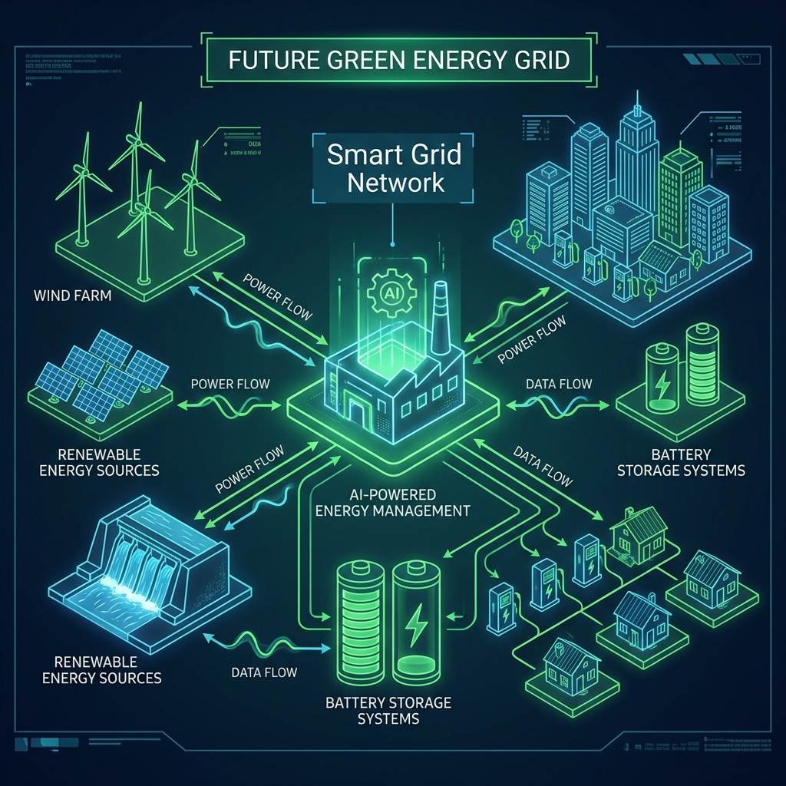

NVIDIA isn't content with building AI infrastructure—they want to reinvent how AI infrastructure relates to the power grid. The company announced a landmark partnership with Emerald AI and six major energy companies to develop what they're calling "flexible AI factories"—data centers designed not just to consume power intelligently, but to actively support grid stability.
The energy partners read like a who's who of American power: AES, Constellation, Invenergy, NextEra Energy, Nscale Energy & Power, and Vistra. Together, they represent enough generation capacity to power a substantial chunk of the continental United States. And now they're betting that the future of energy infrastructure involves AI factories that operate as dynamic grid assets.
The Vera Rubin DSX AI Factory
Central to this initiative is NVIDIA's new Vera Rubin DSX AI Factory reference design—a blueprint for facilities that can ramp compute workloads up or down based on grid conditions. Named after the astronomer who discovered dark matter, the architecture represents a fundamentally different approach to data center design.
Traditional data centers aim for constant power consumption—steady, predictable, always-on. The Vera Rubin DSX design flips that model. These facilities are designed to be flexible loads that can reduce consumption during peak demand periods, absorb excess renewable generation when supply exceeds demand, and even provide grid services like frequency regulation and voltage support.
The technical details are impressive. Each facility includes massive battery storage systems, sophisticated power electronics, and AI-driven workload orchestration that can shift training jobs across time and geography based on grid conditions. A training run that might take days can be paused, migrated, or throttled to support grid stability.
From Grid Burden to Grid Asset

This represents a profound shift in how we think about AI infrastructure. For the past two years, the narrative has focused on AI's insatiable appetite for power—stories about data centers straining grid capacity, delaying coal plant retirements, and competing with residential consumers for electricity. NVIDIA's proposal turns that narrative on its head.
The pitch is simple: AI factories can be good grid citizens. By designing facilities that can modulate their consumption and even feed power back to the grid, the AI industry can transform from a perceived burden into a genuine asset for grid operators struggling with renewable energy intermittency.
The numbers are compelling. A flexible AI factory can apparently provide the grid services equivalent to a small power plant—without the emissions, fuel costs, or regulatory complexity of traditional generation. For grid operators facing the challenge of integrating ever-increasing renewable capacity, that's potentially transformative.
The Emerald AI Connection
Emerald AI's role in this partnership deserves attention. While NVIDIA provides the hardware and reference designs, Emerald AI brings the software layer—the intelligence that actually orchestrates these flexible loads. Their platform manages the complex trade-offs between AI training efficiency and grid support services.
The Emerald system makes real-time decisions about workload scheduling, power consumption, and grid service provision. It balances the competing demands of AI developers who want their models trained as quickly as possible against grid operators who need predictable, stable power systems. It's a delicate optimization problem that Emerald claims to have solved.
The Energy Company Perspective
What's fascinating is why energy companies are embracing this. These aren't startups chasing novelty—they're established utilities with fiduciary duties and conservative risk profiles. Their participation signals genuine belief that flexible loads represent the future of grid management.
Constellation, America's largest producer of carbon-free energy, sees flexible AI factories as a way to monetize excess nuclear and renewable generation that might otherwise be curtailed. NextEra, a giant in wind and solar, views them as essential infrastructure for managing the intermittency that comes with renewable dominance. AES and Vistra see grid services revenue streams that didn't exist five years ago.
The utilities aren't just customers—they're co-investors and co-designers. The Vera Rubin DSX specifications were developed with direct input from grid operators who understand what they actually need from flexible loads.
Deployment Timeline
The first Vera Rubin DSX facilities are already under construction, with commercial operation expected by early 2027. NVIDIA claims these facilities can connect to the grid faster than traditional data centers because their flexible nature reduces interconnection queue congestion—a major bottleneck for power-hungry infrastructure.
By 2028, the partners project over 10 gigawatts of flexible AI factory capacity across the United States. That's roughly equivalent to the total data center capacity that existed in the entire country just five years ago—except this capacity actively helps rather than hinders grid stability.
The Competitive Implications
This initiative creates a significant moat for NVIDIA and its partners. While competitors focus on raw compute performance, NVIDIA is building an ecosystem that addresses the fundamental constraint on AI growth: power. The company that solves the energy problem while competitors struggle with interconnection queues gains a substantial strategic advantage.
It also raises the bar for what constitutes responsible AI infrastructure. As flexible AI factories prove their grid value, traditional data centers that can't provide similar services may face increasing regulatory and social pressure. The industry may be bifurcating between "good" AI infrastructure that supports the grid and "bad" AI infrastructure that simply consumes resources.
The Token Economy Connection
NVIDIA's announcement includes an interesting twist on the economics: these facilities are designed to generate "valuable AI tokens and intelligence" while providing grid services. The dual-revenue model—selling both AI compute and grid services—could fundamentally change data center economics.
In periods of high grid demand, facilities might earn more from providing stability services than from AI training. During periods of excess renewable generation, they can absorb cheap power for compute-intensive workloads. The optimization challenge becomes fascinating: when to compute, when to curtail, when to sell grid services.
This is AI infrastructure maturing into a sophisticated grid participant. The implications extend far beyond NVIDIA's bottom line—they suggest a future where AI and energy systems are deeply integrated, each making the other more efficient and capable.